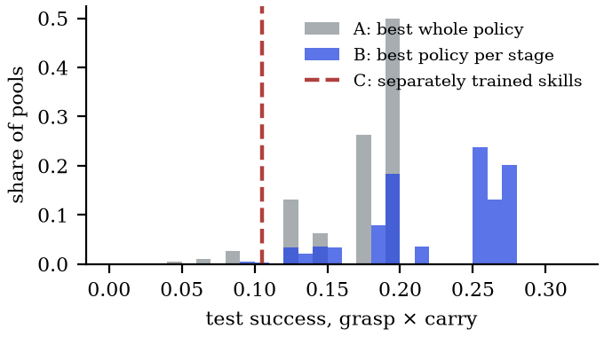

Dexterous manipulation · simulation · pre-registered comparisons · manuscript prepared for IEEE Robotics and Automation Letters (not yet submitted)
Learned in-betweeners make simulated dexterous hands learn faster
MotionBricks builds motion from reusable parts. We tested both of its layers on simulated dexterous hands, registering the main comparisons before running them. Keyframes joined by a learned in-betweener lead a continuous latent that decides at the same rate and reach the training plateau sooner; straight-line keyframes and fixed primitives do not. At the skill level, choosing the best policy for each stage completes more episodes; training the skills separately does not. The gains come from a learned in-betweener and from per-stage selection, not from training the skills separately.
Mu-Hua Wang · National Yang Ming Chiao Tung University · sole author
Everything shown is in simulation. Code and the full pre-registration log follow on acceptance.
Same start, three ways to run grasp → carry → carry again (left to right: A, B, C). B, the best flat policy for each stage, finishes all three stages in 3.3 s. A, one flat policy for every stage, grasps the ball but never delivers it before the 14 s limit; C, separately trained skills, never completes the grasp. This is one test episode, the first on which B finished all three stages, not a statistic: B did so in 47 of 400 test episodes. The counts are below.
A learned in-betweener learns faster
Each hand-motion prior became the action space of a PPO policy on a simulated Shadow Hand holding a cube under changing tilts. Policies trained on two-skill sequences and were scored on three-skill sequences they never saw. Over the first 2.5 M frames the keyframe interface’s mean training success was 0.40, against 0.25 for plain PPO and 0.27 for the continuous latent (10 seeds each, p = 10−4 for both, post hoc). The latent also takes one decision every 16 frames, so the difference is not the decision rate.

Lines: success on the training sequences, mean and standard error over 10 seeds. Dots: success on the held-out sequences for the same 10 seeds at 1.5 M and 5 M frames. At 1.5 M frames the keyframe interface won on held-out sequences in 17 of 20 seeds (0.59 against 0.22, declared; difference +0.38, 95 % CI 0.23 to 0.52). At 5 M frames the data do not separate it from the continuous latent on held-out sequences (0.44 against 0.49, inconclusive); it stays above plain PPO (0.44 against 0.22), which also decides every frame. On the training sequences the three end within 0.06 of each other.
At 1.5 M frames, on a held-out sequence (hold under a y tilt, hold under an x tilt, release). Left, the keyframe interface holds both tilts and releases; right, the continuous latent loses the cube at 1.8 s, during the first hold, which also appears in training. RL seed 13, whose success is closest to the 20-seed means; the episode is the first evaluation episode (of 100) in which the keyframe policy succeeds and the latent fails. Real time.
On three other objects (a heavier cube, a sphere and a cylinder) the lead was smaller and not significant (pooled test, p = 0.067).
Both of MotionBricks’ layers, tested
Motion level · poses joined by a learned in-betweener
Faster
The same target poses joined by straight lines never learned to release, so on this task the learned in-betweener, not the keyframes alone, carries the gain. Not every modular action space helps: a bank of fixed primitives is the weakest prior.
Skill level · units that act, chained
Selection, not separate training
Adroit relocate, extended into grasp then carry, with the 25 human demonstrations of D4RL and behaviour cloning; PPO from scratch never completed a carry. A stage counts as done only after its goal has held for 25 consecutive steps: with a one-step criterion, a carry skill learned to fling the ball through the target (video).
The fling, shown at quarter speed. Under a one-step success criterion, a PPO carry skill learned to throw the ball through the target, at 3.0 to 5.4 m/s at the counted step in these three episodes (median 3.7 m/s over all episodes), and each throw counted as a success. After the counted step the hand is driven to its neutral pose so the ball’s path stays visible. This policy predates the strict 25-step criterion and is used in no reported result.
Per-stage selection, not separate training
A pre-registered test on fresh seeds, with 20 trainings per side and 400 test episodes never used for any choice. A is the best of 20 flat policies, used for every stage. B uses the same 20 flat policies, the best grasper for the grasp and the best carrier for every carry. C trains 10 grasp skills and 10 carry skills separately and chains the best of each.
| Arm | Grasp, then carry | Grasp, carry, carry again |
|---|---|---|
| A · best flat policy, every stage | 61 / 400 | 12 / 400 |
| B · best flat policy per stage | 97 / 400 | 47 / 400 |
| C · separately trained skills | 45 / 400 | 6 / 400 |
Episodes that completed every stage, of the 400 test episodes.
Our declared prediction, C above A, failed in the wrong direction (p = 0.12), and so did the prediction that C would match B. Per stage, C lost at the grasp (0.57 against A’s 0.77), while its carry after a grasp matched A’s (0.20). B won through the carry: its carrier completed 0.34 of carries after a grasp, against A’s 0.20. B beat A at two stages (p = 0.002) and nearly quadrupled it at three (p < 10−5).
The benefit belongs to modular deployment, not modular training.

Not a matter of pool size. B chose from 20 policies per stage and C from 10. A post hoc check, written down before it ran, repeated B’s choice on every pool of 10 flat policies (184 756 of them), scoring each by the product of per-stage test rates. Per-stage selection beat separate training in 99 % of pools (mean 0.23 against 0.10), and in 96 % of 10 000 redrawn pools; it beat whole-policy selection in 82 %.
When separately trained modules would pay
A chain of modules succeeds with probability ∏ P(module i | end states of module i−1), so the cost of separate modules sits at the hand-offs. We formulated four conditions during the study and offer them as hypotheses. MotionBricks, in animation, plausibly meets all four; neither dexterous task meets the last.
| Condition | Motion level | Skill level |
|---|---|---|
| Solution lies inside the modules | partly — the grip needs 83° of mean finger flexion; the most-flexed grips we measure in OakInk and TACO reach 73–76°; a residual covers the gap | yes — skills learned on the task |
| Clean hand-offs | yes — poses only | if enforced — a one-step stage let carry fling the ball |
| Something to amortise | partly — faster exploration, one task | yes — PPO from scratch never carries |
| A flat learner cannot match it | no — ends level with the latent | no — flat policies selected per stage did best |